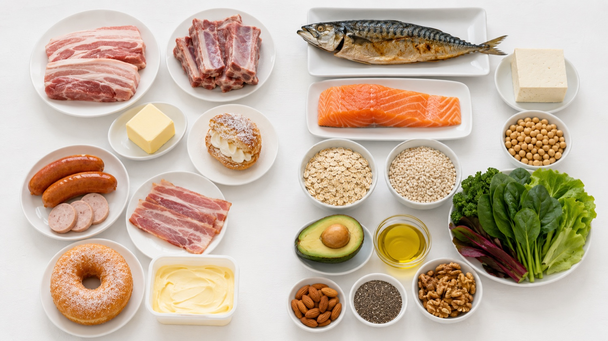

한눈에 보는 핵심 수치
고위험군 LDL 목표
<70
mg/dL (관상동맥질환·당뇨)
포화지방 상한
6
% 총열량 (≈ 13g/일)
오메가-3 권장
2~3
회/주 (등푸른생선)
식이섬유 목표
25~40
g/일 (수용성 ≥ 10g)

위험군별 LDL·Non-HDL·중성지방 목표 (2025 한국지질·동맥경화학회)
위험군 분류
LDL-C
Non-HDL-C
중성지방 (TG)
초고위험군 — 관상동맥질환·뇌졸중·심부전
< 55
< 85
< 150
고위험군 — 경동맥질환·대동맥류·당뇨 장기합병증
< 70
< 100
< 150
중등도 위험군 — 위험인자 2개 이상 (고혈압·흡연 등)
< 130
< 130
< 150
저위험군 — 주요 위험인자 1개 이하
< 160
—
< 150
피해야 할 지방 vs 권장 지방 (Saturated & Trans · Omega-3)
피하세요 · 포화지방 & 트랜스지방
- 1. 삼겹살·갈비·가공육 — 포화지방과 나트륨이 함께 많습니다.
- 2. 버터·생크림·치즈 — 빵·디저트 속 숨어 있는 포화지방입니다.
- 3. 마가린·쇼트닝·튀김 — 트랜스지방과 산화 지방 노출을 줄입니다.
- 4. 라면·단 음료·잦은 음주 — 중성지방 상승을 악화시킬 수 있습니다.
권장 · 오메가-3 & 단일불포화
- 1. 등푸른 생선 — 고등어·연어·정어리를 주 2~3회 선택합니다.
- 2. 콩·두부·렌틸콩 — 동물성 단백질 일부를 식물성으로 바꿉니다.
- 3. 귀리·보리·채소 — 수용성 식이섬유를 매 끼니에 더합니다.
- 4. 올리브유·견과류 — 하루 한 줌, 튀김 대신 무침·샐러드로 씁니다.